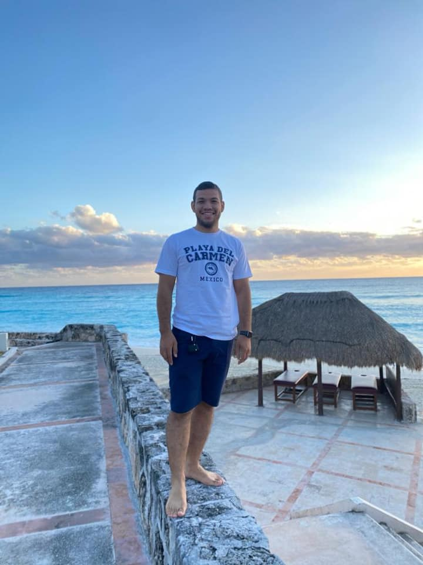

Omar Montes Leon | WDD130
Greetings, I'm Omar Montes Leon, and I've spent over four years navigating the dynamic landscape of sales. My journey in this field has equipped me with valuable experience and a keen ability to adapt to the ever-changing market dynamics. Hailing from the diverse and culturally rich backdrop of Colombia, I infuse my work with a unique perspective that goes beyond conventional approaches. In addition to my professional pursuits, I find immense joy in my personal life. I am happily married, and the anticipation of welcoming our first child in April adds an extra layer of excitement to my journey. Balancing the demands of a thriving career with the responsibilities of a growing family, I am dedicated to creating a secure and joyful future for my loved ones. Driven by a passion for both professional excellence and personal fulfillment, I see each day as an opportunity for growth and positive impact. Join me on this multifaceted journey, where the intersection of career and family life becomes a harmonious blend, creating a fulfilling and purposeful narrative.